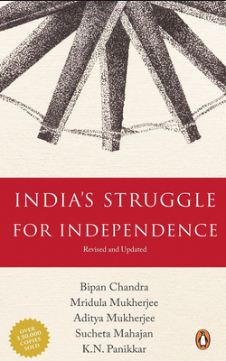

India's Struggle for Independence
India's Struggle for Independence is the book written by historian and professor Bipan Chandra and published by
Penguin Random House in 1987.[1] The book centers around the Indian independence movement.
Reception
'Revolutionary Terrorist' controversy
Bhagat Singh along with Chandra Shekhar Azad, Surya Sen and others have been referred as 'revolutionary terrorist'
in chapter 20 of book.[2] Bhagat Singh's family objected the use of term in April of 2016.[3] In parliamentary upper
house Rajya Sabha, K. C. Tyagi, Janata Dal (United) politician, demanded to delete "objectionable references" for
Bhagat Singh.[2] P. J. Kurien, deputy chairman of house, urged government to remove all references which refer
Bhagat Singh as "revolutionary terrorist" which was assured by Mukhtar Abbas Naqvi, then Ministry of Parliamentary
Affairs.[2] Samajwadi Party politician Naresh Agarwal along with BJP MPs demanded action against authors while Left
MPs opposed it in Rajya Sabha.
In May 2016, Hindutva activist Dinanath Batra wrote a letter to HRD Ministry to sought ban on the book for the very same
reason.[2][1] He also demanded action against Delhi University officials who printed it in Hindi.
Mridula Mukherjee, co-author of the book had clarified that word didn't have a pejorative meaning when it was published.
Professors of Jawaharlal Nehru University claimed that Bipan Chandra praised Bhagat Singh when he referred him as
'revolutionary terrorist'.[5] Later, the book was red-flagged by the Delhi University.[6] Indian History Congress
had passed a resolution in favor of book and demanded to end 'virtual ban' on the book in 2017.

Author : Bipan Chandra
Country : India
Language : English
Publisher : Penguin Random House
Publication date:1987
Media type : print